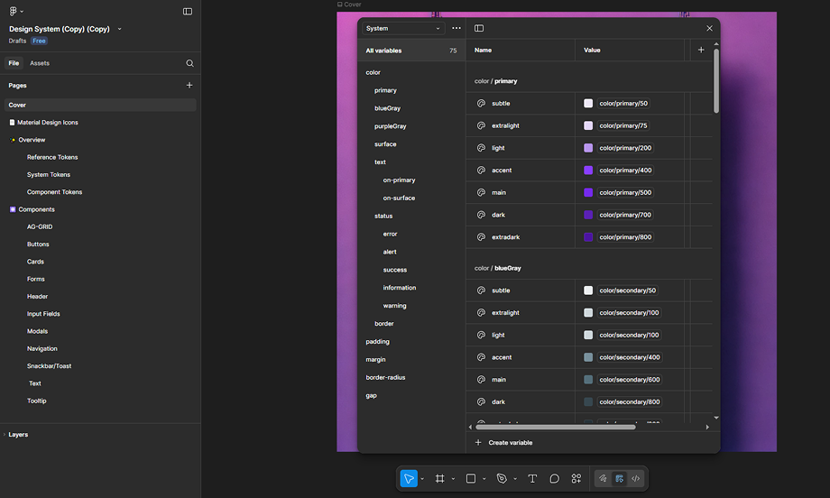
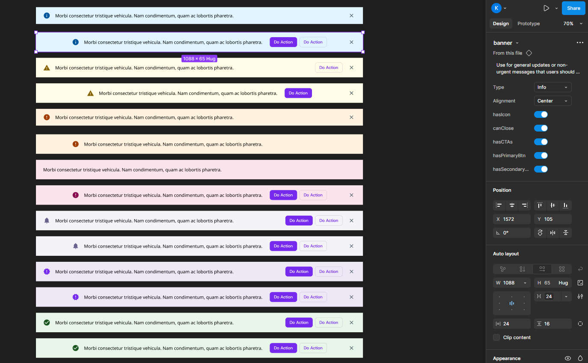
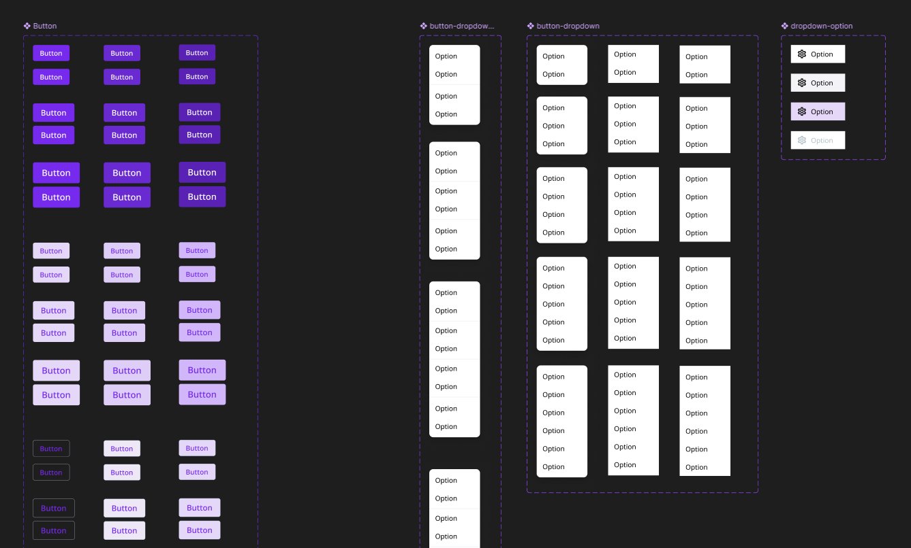
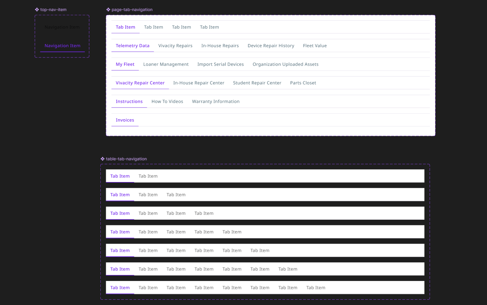
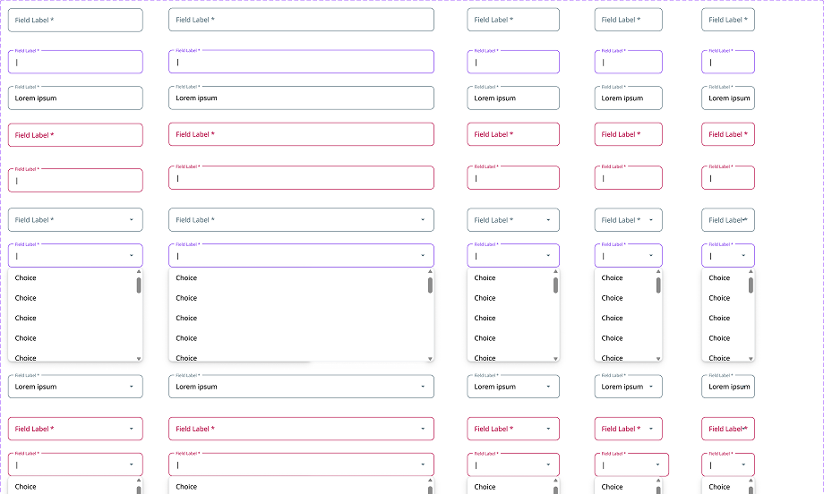

The Dream™ Design System was created to bring consistency, efficiency, and clarity to the visual design and UI component structure of Dream™, a device management and repair platform for K-12 schools. Before the system was introduced, I, the sole designer on the team, and developers frequently rebuilt common interface elements from scratch, resulting in subtle inconsistencies in spacing, colors, and component behavior over time. Even when these differences were small, they led to increased development time, slower page builds, and UI elements that did not fully align visually.
The goal of building the Dream™ Design System was to establish a repeatable, scalable foundation for both design and development. The system introduced structured design tokens, standardized typography and spacing rules, and reusable, flexible UI components that could be drag-and-dropped into new designs. Developers then translated these components into Storybook to support accurate and efficient implementation in code. Together, these efforts reduced friction across the design-to-development workflow and enabled faster feature creation.
Before the design system, Dream™ had grown rapidly over time, with UI patterns being developed as needed for each new feature. Because there was no centralized component library, variations emerged in areas such as button styles, table spacing, input fields, and color usage. While each interface worked individually, the product as a whole lacked a unified visual language.
This had several impacts:
Because I was the sole designer on the team, I was frequently revisiting previous files to copy components, manually aligning spacing, and verifying color usage. Meanwhile, developers needed precise documentation to ensure UI fidelity, which was difficult when component structures weren’t standardized yet. The lack of a shared system created friction, even when collaboration was strong.
I began by auditing the existing UI across Dream™, noting where components differed in appearance or spacing depending on who built them or when they were created. I grouped these patterns into categories, such as buttons, inputs, banners, modals, navigation, and tables, and identified where consolidation or redefinition was needed.
To support scalability, I structured the system using a token-based approach:
color.primary)button.primary.hover)

These tokens controlled:
Once the tokens were set, I rebuilt key components using variant-based Figma components to allow flexible configuration. For example:




Throughout this process, I collaborated closely with a software developer responsible for implementing the Storybook version of the system. We aligned naming conventions, reviewed component structure regularly, and clarified expected interaction behavior. I provided detailed documentation directly within Figma, including usage guidelines and example configurations.
The Dream™ Design System has been integrated into both the design and development workflows. Designers can now build new mockups significantly faster using drag-and-drop standardized components, and developers can reference fully documented, ready-to-use components in Storybook.
Key results include:
The system continues to expand naturally as new interface patterns emerge. Recently, new banner components representing different alert types (info, warning, error, promotional) were added following usage needs across multiple pages.
Today, the Dream™ Design System serves as a scalable foundation that supports clarity, cohesion, and efficiency for both design and development across the platform.